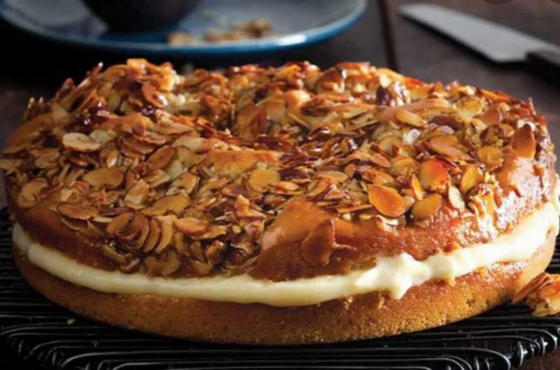
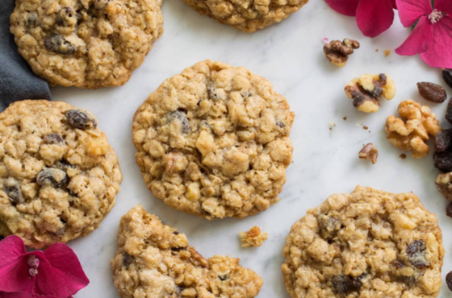
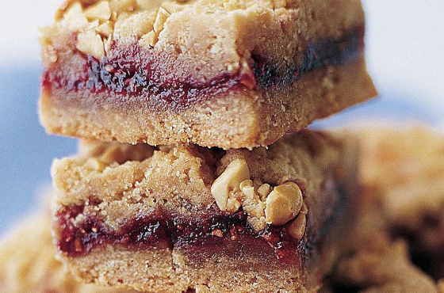
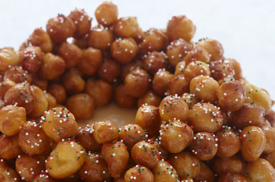
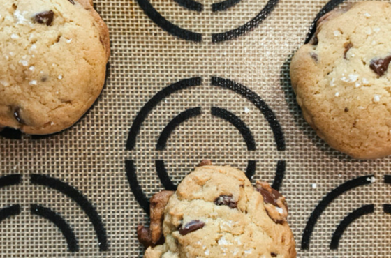
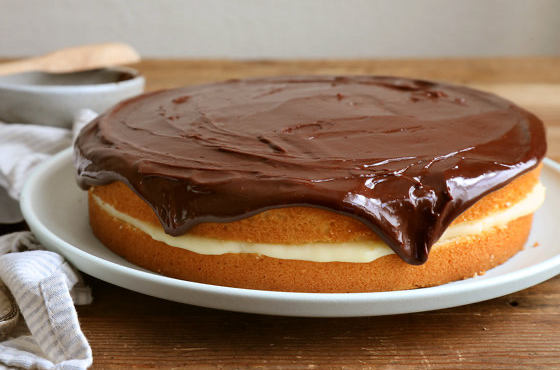
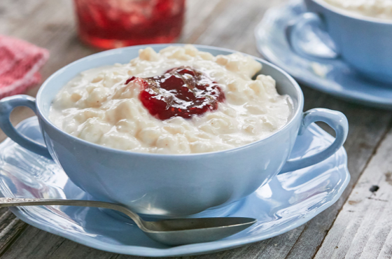

Desserts
Ingredients
Bienenstich filling:
- 5 egg yolks
- ⅜ cup corn starch
- 2 cups milk
- ½ cup granulated white sugar
- 2 vanilla beans (or 2 tsp vanilla extract)
- 1 cup heavy whipping cream
- 2 tsp cream of tarter
- 3 tbsp powdered sugar
Bienenstich dough:
- 1 cup lukewarm milk
- ¼ cup granulated white sugar
- 2¼ tsp active dry yeast (1 envelope)
- 2 eggs
- ½ cup butter, melted
- ½ tsp salt
- 4 cups all-purpose flour
Bienenstich almond honey topping:
- ⅔ cup butter
- ¼ cup heavy whipping cream
- ½ cup granulated white sugar
- 2 tbsp honey
- 1⅓ cup almond slices
- 1 vanilla bean (or 1 tsp vanilla extract)
Directions
- Start with the filling: In a bowl whisk egg yolks and cornstarch to combine.In a heavy-bottomed saucepan bring milk and sugar to a simmer over med-high heat. Cook 2 minutes, stirring constantly. Stir about 1/2 cup of hot milk into the egg yolks to slowly warm it. Then pour tempered egg mixture slowly into the saucepan, whisking constantly. Cook until filling is thick, for about 2 minutes. Whisk continuously. Stir in vanilla until combined. Press pudding with a spatula through a mesh strainer into a bowl and cover with plastic wrap to prevent forming a skin. Refrigerate at least 2 hours or overnight.
- Make the dough: In a large mixing bowl stir with a stand or handheld mixer fitted with a whisk, milk, sugar, and yeast to combine. Let sit for about 5-10 minutes until it starts to get foamy on the surface.
- Preheat oven to 200 degrees F. Line a 9x13 baking pan with parchment paper. Set aside.
- Add eggs, butter, and salt and whisk to combine. Replace whisk attachment and attach a dough hook. Add flour and stir on low speed until the dough comes together. Turn on medium speed and knead for about 5 minutes. The dough should be sticky to touch but not stick to the bowl any longer. If it still sticks to the bowl, add a maximum of ½-1 tbsp of flour and knead on low speed another 1-2 minutes. Transfer dough to a lightly greased heatproof bowl (or use a non-stick spray). Grease the top of dough as well. Turn off preheated oven and place bowl in the oven to rise for about 15 minutes. Leave the oven door ajar.
- Remove bowl from the oven and preheat again to 200 degrees F.
- On a lightly floured surface roll out the dough to a 9x13 inch rectangle. Take as little four as possible, just enough to roll the dough out without any problems. Transfer to the prepared baking pan. Turn off preheated oven and place the Bienenstich dough in the oven to rise for about 30 minutes, until it's doubled in size. Leave the oven door ajar.
- Meanwhile, make the almond honey topping. In a heavy bottomed saucepan, bring butter, heavy whipping cream, sugar, and honey to a boil. Simmer for about 2 minutes. Remove from heat. Add almonds and vanilla and stir to combine.
- Remove dough from the oven and preheat to 375 degrees F. Spread almond topping evenly over the top of the dough. Bake for about 30 minutes or until a toothpick inserted into the center comes out clean. Let cool to room temperature.
- Finish the filling: Mix heavy whipping cream with a handheld or stand mixer fitted with a whisk attachment on medium speed until soft peaks form. Add cream of tarter and powdered sugar, mix until stiff peaks form. Set aside.
- In another large bowl mix chilled vanilla pudding until smooth and creamy. fold in whipped cream.
- Assemble the Bienenstich: Carefully cut the cake with a long and sharp knife horizontally. Make sure that you are staying in a straight line. Remove the top layer. Spread filling on top of the bottom layer and place top layer back on top. Refrigerate for about 4 hours or until filling is firm. Store leftovers in an airtight container in the fridge for up to 2 days.
Submitted by Kristin Pflughoeft
When I was a teenager, I spent two summers traveling across Europe. Some of my favorite times were spent in Germany, more specifically, their delectable pastry and coffee shops. The desserts were UNBELIEVABLE. Little did I know, many years later I would go on a blind date while visiting friends in Colorado. It was love at first sight. I squinted really hard to try to read his last name on his credit card as he so graciously paid for our meal. What in the world!?! So many letters and I surely couldn't even begin to pronounce it. Long story short, he is German and we've been married 20 years. Were those delicious pastries foretelling? Who knows, but the moral of my story is never give up on the search for love. It may come as suddenly as a bee sting but sweeten your life as surely as it has mine.

Bob's Oatmeal Cookies
Prep Time: 5 min | Cook Time: 10 min | Total Time: 15 min
Ingredients
- 2 cups shortening or butter, warmed
- 2 cups sugar
- 2¼ cups brown sugar
- 4 eggs
- 2 tsp vanilla
- 3 cups flour
- 2 tsp salt
- 2 tsp baking soda
- 2 tsp cinnamon
- ½ tsp ground gloves
- 6 cups Old Fashioned Quaker Oats
- 2 cups chopped walnuts or pecans
- 1 cup raisins
Directions
- Cream shortening/butter with sugars, then blend in eggs and vanilla.
- Mix in the flour and seasonings with the sugar and eggs.
- Fold in the remaining ingredients.
- Using a large spoon or ice cream scoop, roll into balls for each cookie. Place on a greased cooking sheet, flatten with a fork.
- Bake at 350F for 10-12 minutes or until golden. Yield: about 10 dozen cookies.
- Enjoy!
Note: intstead of baking all at once, you can freeze teh flattened cookie dough and bake fresh as needed.

Submitted by Bob Ruybal
I found this recipe years ago on the back of an oatmeal box. It is a family favorite. We are a large family, so you may want to cut this in half.

Peanut Butter & Jelly Bars
Prep Time: 15 min | Cook Time: 45 min | Total Time: 1 hr
Ingredients
- ½ lb (2 sticks) unsalted butter at room temperature, plus more for greasing the pan
- 1½ cups sugar
- 1 tsp pur vanilla extract
- 2 extra large eggs, at room temperature
- 2 cups creamy peanut butter (18 oz)
- 3 cups all-purpose flour, plus more for dusting the pan
- 1 tsp baking powder
- 1½ tsp kosher salt
- 1½ cups raspberry jam, or other jam (18 oz)
- ⅔ cups slated peanuts, coarsley chopped
Directions
- Preheat the oven to 350 degrees. Grease a 9 x 13 x 2-inch baking pan.
- In the bowl of an electric mixer fitted with the paddle attachment, cream the butter and sugar on medium speed until light yellow, about 2 minutes. With the mixer on low speed, add the vanilla, eggs, and peanut butter and mix until well combined.
- In a small bowl, sift together the flour, baking powder, and salt. With the mixer on low speed, slowly add the flour mixture to the peanut butter mixture. Mix just until combined.
- Spread two thirds of the dough in the prepared pan, using a knife to spread it evenly. Spread the jam evenly over the dough. Drop small globs of the remaining dough evenly over the jam. Don’t worry if all the jam isn’t covered; the dough will spread when it bakes. Sprinkle with the chopped peanuts and bake for 45 minutes, until golden brown. Cool and cut into small squares.

Submitted by Sean Murphy
I'm not going to try and take credit for this one, this is straight from Ina Garten and you cannot beat her recipe! We stumbled on this recipe several years ago and it's now our most "Go-To" treat recipes in our arsenal as I'm sure it will be for you. Easy to make, and ridiculously delicious!

Struffoli (Honey Balls)
Prep Time: 30 min | Cook Time: 10 min | Decorating Time: 5 min | Total Time: 45 min
Ingredients
Struffoli Dough
- 2⅔ cups flour
- ¾ tsp baking powder
- pinch of salt
- 5¾ tbsp butter (melted)
- 1 orange zest
- 2¾ tbsp sugar
- 3 tbsp Grand Marnier or orange juice
- 3 eggs
Toppings
- 10½ oz honey
- Non-parelli sprinkles
- Slivered almonds
Directions
- In a large bowl whisk together the flour, the baking powder and the salt, then add the butter, orange zest, sugar and Grand Marnier (or orange juice), start to combine with a fork until crumbly.
- Add the eggs one at a time and mix to combine, when almost combined move the mix to a lightly floured flat surface add an extra 1 - 1/2 tablespoons flour and knead together to form a soft dough. Cover with a towel, cloth or lid (not sealed) and let rest for 30 minutes.
- Place the dough on a lightly floured surface and roll into thin ropes 1/4 inch in diameter. Cut to make small cubes and roll each cube into a ball slightly smaller than a marble. Try to make them all the same size.
- In a medium pot add 2-3 inches of oil and heat to 350°F add the struffoli (in batches) turning a couple of times and when golden drain on a paper towel lined plate and let cool.
- While struffoli are cooling in a large pan on low / medium heat, heat the honey until warm and slightly watery. Add the cooled struffoli and mix to coat, then sprinkle with sprinkles and slivered almonds.
- Let sit for approximately 1 1/2 - 2 hours and then serve.
Submitted by Brittany Famighetti
This is an italian recipe that my grandma used to make during the holidays. It is easy to make and doesn't require many ingredients.

Becca’s Break ‘N Bake Chocolate Chip Cookies
Prep Time: 30 min - 1½ hrs | Cook Time: 15 min | Total Time: 45 min - 2 hours
Time varies depending on whether you're baking the same day or freezing for future enjoyment.
Ingredients
- 1 cup unsalted butter, room temperature
- 1 cup brown sugar
- 3.4 oz package instant vanilla pudding*
- 2 large eggs, room temperature
- 1 tsp vanilla extract**
- 2¼ cups all-purpose flour
- 1 tsp baking soda
- ½ tsp salt
- 1 cup semi-sweet chocolate chips
- 1 cup dark chocolate chips***
- Fleur de Sel, for garnish
Baker's Notes:
- (*) Make sure you purchase regular vanilla pudding mix, not French Vanilla
- (**) I’m a fan of Bourbon Vanilla Extract. I use it in all my baking
- (***) For the chocolate chips, I use Nestle Toll House Semi-Sweet and Ghirardelli 60% cocoa for the dark
- I’ve found the perfect baking time for my oven is 13 minutes, 30 secs. Like yours more under or overdone? Decrease or increase baking time as necessary.
- Whether baking the same day or freezing for later, it’s important to let cookies rest for 2 minutes on the baking sheet before transferring to a wire rack or eating right away.
- To kick it up a notch: brown your butter and let solidify to room temperature. It’s a bit extra, but worth it!
Directions
Prepare the Cookie Dough
- In a medium bowl, whisk together flour, salt, and baking soda. Set aside.
- Using a stand mixer, beat together butter and brown sugar on medium-high speed until creamed
- Reduce mixer speed to medium low. Add in pudding mix, eggs, and vanilla extract, one at a time, scraping down sides to make sure all ingredients are fully incorporated.
- Reduce mixer speed to low. Add the flour, salt, and baking soda mixture. Once dry ingredients start incorporating into the wet, increase speed slowly and mix until just combined.
- Reduce mixer speed back to low and add in dark and semi-sweet chocolate chips until just combined.
To make same day:
- Chill dough in the refrigerator for at least one hour, covered.
- When ready to bake, preheat oven to 350 degrees F.
- Using a rounded tablespoon scoop, portion out cookie dough onto a prepared baking sheet. Smash slightly with the palm of your hand to create a rounded disk. Garnish with a generous pinch of Fleur de Sel.
- Bake for 12-14 minutes.
- When finished baking, allow cookies to rest on baking sheet for 2 minutes before transferring to wire rack or popping in your mouth.
Freezing for later?
- Use a rounded tablespoon scoop, portion out cookie dough, press balls slightly with the palm of your hand to create a rounded disk, and place in a freezer safe tupperware until baking day.
- When ready to bake, pull the desired number of dough disks out of the freezer and place on a prepared cookie sheet.
- Preheat oven to 350 degrees F. It’s important to let frozen dough warm a bit while the oven preheats!
- Just before you pop in the oven, garnish dough disks with a generous pinch of Fleur de Sel.
- Bake for 12-14 minutes.
- When finished baking, allow cookies to rest on baking sheet for 2 minutes before transferring to wire rack or popping in your mouth.
Submitted by Becca Rogers
I L-O-V-E dessert. I’m a big believer in everything in moderation and enjoying the life you live. For me, some of that joy comes from indulging in a sweet treat. And, if I’m going to indulge, it better be damn delicious.
Enter my Break ‘N Bake Chocolate Chip Cookies. Slightly soft with a mild crust, buttery, chocolatey, and just enough salt-to-sweet to make your tongue do a happy tango.
I’m not going to lie, it took a lot of soul searching (er, baking) to get this one right, but it was a labor of love. It all started with a college roommate’s family recipe. The secret ingredient, instant vanilla pudding mix. The addition of this one ingredient resulted in pillowy-soft chocolate chip cookies that were oh-so-good! Unfortunately, I didn’t save her recipe, but I had to have something similar. So I embarked on my quest.
Finally, I found a recipe from one of my favorite food bloggers, and gave it a whirl. Actually, for quite some time I made the blogger’s recipe as is, but I just had to experiment (as I typically do).
After several iterations (none of which were bad, just not THE ONE), I developed the most scrumptious cookie. The key components to make these winners? All brown sugar (for taste and texture), TWO types of chocolate chips, and flaky Fleur de Sel to finish. It’s chocolate chip cookie nirvana!
What makes them Break ‘N Bake, you ask? I typically make a batch of dough, portion out the cookie balls, and freeze them. Why? I can take out one or two or four (if enjoying with a fellow dessert lover), and have freshly baked goodness in a matter of 30 minutes. There’s nothing quite like a cookie still warm from the oven, and, packed away in the freezer, they’re just enough work to ensure they stay a treat.

Boston Cream Pie
Prep Time: 1 hr | Cook Time: 70 min | Total Time: 130 min
Ingredients
Cake
- 2 cups all-purpose flour
- 1½cups sugar
- 1 tbsp baking powder
- 1 tsp salt
- ½ cup (1 stick) softened butter
- 1 cup milk
- 1 tsp vanilla
- 2 eggs
Custard Filling
- ½ cup sugar
- ½ tsp salt
- 2 tbsp corn starch
- 1 tbsp flour
- 2 cups milk
- 1 egg
- 1 tsp butter
Icing
- 3 tbsp butter
- 3 squares of unsweetened chocolate
- 2 cups confectioners sugar
- ¼ tsp salt
- 5 tbsp scalding milk
- 1 tsp vanilla
Directions
Cake
- Sift all dry ingredients into a bowl.
- Add butter, milk, and vanilla.
- Beat for 2 minutes with electric mixer.
- Add eggs and beat for another 2 minutes.
- Bake in (2) 8 inch round pans which are greased and floured. (I grease the pans then line the pans with wax paper or parchement and grease and flour over that.)
- Bake at 350F for 35-40 minutes
- Cool on wire racks completely before continuing.
Custard Filling
- Mix sugar, salt, corn starch, flour, and milk in the top of double boiler (or a pan you can use as a top of a double boiler, which works better).
- Bring to boil slowly over low heat. Boil slowly for 3 minutes, stirring constantly.
- Remove from heat.
- Beat an egg in a small bowl. Add a little of the hot to tthe egg to temper it, then add it to the hot mixture.
- Place over hot simmering water to cook it there for 15 minutes.
- Remove from heat and add butter.
- Let it cool to room temperature and add vanilla.
Icing
- Melt together butter and unsweetened chocolate.
- Sift confectioners sugar and salt into a bowl.
- Pour scalding milk over the sugar and stir to dissolve.
- Add vanilla and the chocolate mixture.
- It will be very thin, beat until it is thick enough to spread.
To Assemble
- Cut each layer of the cake in half to make 4 layers.
- Place 1 layer ofn the plate and spread with the custard.
- Repeate with second and third layers.
- Place the 4th layer on top and spread teh icing over letting it kind of drip down the sides.
Submitted by Stephen Rose
This is an OLD family recipe from Boston, MA which was my favorite birthday cakes growing up. In fact it is still one of my favorite cakes.

Rice Pudding
Prep Time: 25 min | Cook Time: 45-60 min | Total Time: 70-85 min
Ingredients
- ½ cup uncooked rice (not minute rice)
- 1 pint milk (or half and half)
- 3 eggs
- ¾ cup sugar
- Pinch of salt
- 1 tsp vanilla (or cinnamon)
- Lingonberries
Directions
- Cook rice in 1 pint water for 20 minutes.
- Place in a buttered 1 quart casserole dish.
- Beat eggs; add 1 pint milk, sugar, salt and vanilla.
- Mix and stir in with rice.
- Bake at 300 F for about 45 minutes or until knife comes out almost clean when stuck in the middle.
- Top with lingonberries.
- I found it takes a bit longer to bake than the recipe says.
Submitted by Maddie Deming
This recipe has been passed down in my family & is written down in my Great-Grandmother's hand-written Cookbook, so I apologize that it's not super specific; she was an intuitive cook & her recipe book is full of "guesstimates". My Great-Grandmother came over here from Sweden and we do a big "Swedish Dinner" during the holidays every year.
We make Swedish Meatballs, Julekake (a special Christmas Bread or "Yule Cake"), Julebake (I actually couldn't find this one online so no idea if I'm spelling it wrong but it's basically just Cardamom Bread in the shape of reindeers with little raisin eyes), and Pepperkaker (similar to Ginger Bread Cookies but the key ingredient to all of these is really just Cardamom). And of course, Rice Pudding!
Back when my Great-Grandmother was alive & she cooked these dinners herself, she'd also make Lutefisk, which my family jokingly calls "Fish Jello" (it's really just dried cod soaked in lye & it has a consistency of gelatin) so we don't make that anymore, but it's a delicacy in Sweden during the holidays!
Rice Pudding has always been my favorite though, and always just reminds me of the Holiday Season. Go heavy on the Lingonberries; they're the best part!